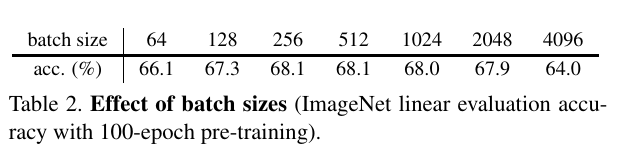
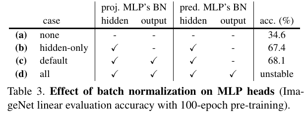
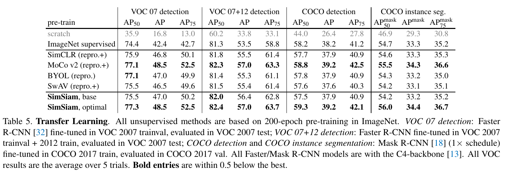

Exploring Simple Siamese Representation Learning (SimSiam)¶

- Paper: https://arxiv.org/abs/2011.10566
- Code: https://github.com/facebookresearch/simsiam
Background¶
Siamese networks¶
Applications:
- signature [4]
- face verification [34]
- tracking [3]
- one-shot learning [23]
Problem¶
Siamese networks 會產生 trivial solutions：所有的輸出結果都是常數，且準確率非常低，如下圖。

有幾種策略來避免這個問題：
- Contrastive learning: 例如 SimCLR [8] 使用正負樣本進行 contrastive learning，負樣本可以用來避免產生常數的解。
- Clustering: 例如 SwAV [7] 套用 online clustering 到 Siamese networks 。
- BYOL [15] 使用 momentum encoder.
Method¶

- stop-grad
- predictor
輸入影像經由資料擴增成為兩個 views \(x_1, x_2\) 後，個別傳入一個共享參數的 encoder \(f\)，到目前為止和一般的 Siamese Networks 並無不同。接著，其中一個 view 傳入一個 MLP head [15] 組成的 predictor \(h\)，輸出結果為 \(p_1 \triangleq h(f(x_1))\)，並且和另一個 view \(z_2 \triangleq f(x_2)\) 計算 negative cosine similarity:
接著，根據 [15] 這裡定義一個對稱化的 loss:
對每一張影像都計算這個 loss，其 total loss 為所有影像的 loss 再取平均，最小值為 \(-1\)。最後，套用這篇方法的重點：在訓練過程，在 \(z\) 的部份停止傳遞梯度 (stop-gradient, stopgrad)。上式修改如下：
演算法如下：

Baseline settings¶
Optimizer¶
- 標準 SGD
- batch size: \(512\)
- learning rate: 使用 linear scaling [15] 的機制 (\(lr \times \text{BatchSize} / 256\))，初始值設定為 \(0.05\)
- 使用 cosine decay schedule
- weight decay: \(0.0001\)
- momentum: \(0.9\)
Projection MLP (encoder \(f\))¶
3 層 MLP:
- (BN+fc+ReLU)*2+(BN+fc)
- hidden layer: \(2048\)-d
Prediction MLP (predictor \(h\))¶
2 層 MLP:
- (BN+fc+ReLU)*2+(BN+fc)
Empirical Study¶
以下是實驗結果：
Stop-gradient¶
Figure 2. 的實驗展示了 collapse 存在的問題。
- 一般的 Siamese Network 的 training loss 在很早期的時候就會下降到最低值（在這實驗中是 \(-1\)）；而加入 stop-grad 機制後則會有正常的 loss 曲線。
- 觀測輸出結果經由 \(l_2\) 標準化 (\(z/\|z\|_2\)) 後的標準差。因為一般的 Siamese Network 輸出為定值，所以標準差為 \(0\)；而加入 stop-grad 機制後，其標準差落在合理的 \(\frac{1}{\sqrt{d}}\)。 註：如果 \(z\) 為一個 zero-mean isotropic Gaussian distribution，其 \(z/\|z\|_2\) 的標準差近似於 \(\frac{1}{\sqrt{d}}\)。
- 如同 1. 的結果，Siamese Network 的準確率趨近於 \(0\%\)；而加入 stop-grad 機制後，會正常的在訓練過程中往上提升。
- 最後經過五次實驗之後的平均準確率。
Predictor¶
如果不加 predictor MLP 會如何？從 symmetric loss 來看：
不使用 predictor 的話，上式會變成：
它的 gradient 會和 \(\mathcal{D}(z_1,z_2)\) 相同，大小為一半。這種情況下，幾乎等同於沒有加入 stop-grad 機制，所以會發生 collapse。

Table 1. 的實驗展示了 predictor MLP 的影響：
- (a) 當沒有 predictor MLP \(h\) 時，collapse 會發生。
- (b) 如果 \(h\) 的參數經過隨機初始化後設定為定值，這樣也不行。但原因並非發生 collapse，而是訓練不收斂，loss 維持在高的值。因此，\(h\) 的參數需要進行訓練。
- © 另外作者也發現如果用固定的 learning rate，訓練結果會更好。可能的解釋為 \(h\) 需要適應最新的 representations，所以減少 learning rate 並非必要。在很多的模型變體中，也發現固定的 learning rate 結果會稍微的更好。
Batch Size¶

實驗設定：固定 SGD 演算法，learning rate 使用 linear scaling rule (\(lr \times \text{BatchSize}/256\))。在 batch size \(\ge 1024\) 使用 \(10\) epochs of warm-up [14]。
從 Table 2. 結果發現：SimSiam 的 batch size 設定值是很寬容的，不管設定多少都可以有相似的結果。對比之下，SimCLR 和 SwAV 必須要有非常大的 batch size (e.g., \(4096\)) 才可以用。
作者注意到標準的 SGD 在 batch size 太大時無法運作，即使是監督式訓練也不行；而這個實驗結果說明了不需要特化的 optimizer。
Batch Normalization¶

從 Table 3. 結果發現：
- (a) 將所有的 BN 移除之後，準確率下降到 \(34.6 \%\)，但沒有發生 collapse。推測原因是最佳化的難度太高。
- (b) 在 hidden layers 加入 BN 以後就提升到 \(67.4 \%\)。
Similarity Function¶
把相似度函數修改如下：
結果為：

結果較差一些，但沒有發生 collapse，證明和相似度函數無關。
Symmetrization¶
Symmetrized loss:
Asymmetrized loss:
\(2 \times\) asym. 代表對每個影像都採樣兩次。結果如下：

代表 Symmetrization 對結果影響不多，類似於更密集的採樣。
Hypothesis¶
以 proof-of-concept 實驗來分析 SimSiam 究竟做了什麼導致它能成功。
Formulation¶
Hypothesis: 假設 SimSiam 以 Expectation-Maximization (EM) like 演算法實作，涉及兩組變數和兩組子問題 (sub-problems)。
考慮一個 loss function 如下形式：
- \(\mathcal{F}\): 神經網路模型，\(\theta\) 是它的參數。
- \(\mathcal{T}\): 資料擴增的變換函數
- \(x\): 輸入影像
- \(\eta_x\): 輸入影像的特徵，其大小正比於輸入影像的數量。
這個 loss 是一個影像與擴增的分佈期望值。為了簡化分析，以 mean square error (MSE) 代替 cosine similarity，因為向量經過 \(l_2\)-normalized 計算會等同於 MSE。
考慮到求解這個 loss function:
這個式子類似於 k-means clustering：\(\theta\) 類似於群中心，\(\eta_x\) 類似於 \(x\) 的 assignment vector (一種 one-hot vector)。也類似於 k-means，這個式子以一種交替的迭代演算法進行最佳化：固定某一組變數，求解另一組。如下：
Solving \(\theta\)¶
可以使用 SGD 進行求解，而這正好是 stop-grad 機制：gradient 不會在 \(\eta^{t-1}\) 進行 back propagate。
Solving \(\eta\)¶
可以直接透過下式計算來求解：
One-step alternation¶
本來要計算期望值需要採樣所有 augmentation，可以只採樣一次來近似，標記為 \(\mathcal{T}^\prime\):
帶回去原式，將被改為如下：
其中，\(\theta^t\) 是常數。因此，上面的式子代表：Siamese network + stop-grad。
Predictor¶
現在開始探討 predictor \(h\) 在這個架構中的作用。
根據定義，predictor \(h\) 預期用來最小化下式：
最佳解為
在前面的式子中，利用 one-step alternation 近似期望值得解。在實務上，不可能透過採樣所有資料點來算出期望值，因此在這邊透過一個神經網路 predictor \(h\) 來預測它的期望值。
Symmetrization¶
到目前為止，都還沒有涉及到 symmetrization。symmetrization 在此處的作用像是更密集的採樣 \(\mathcal{T}\)。實際上這並非是必要的，不過它可以提昇準確率。
Proof of concept¶
Multi-step alternation¶
以下的實驗使用與 SimSiam 相同的架構和 hyperparameter，計算下面的最佳化：
兩個最佳化式子代表會分為兩個 loop 進行更新參數: inner loop (\(\theta\)) 與 outer loop (\(\eta\))。其中，要用 \(k\) 個 SGD steps 來更新 \(\theta\)，結果如下：

從上式可以看出，one-step alteration 的想法是可行的，更多的 steps 雖然結果更好，但是計算量更大。
Expectation over augmentations¶
以下的實驗為了驗證 predictor \(h\) 是否可以近似期望值的計算結果。在這裡，使用 moving-average (類似於 [36] 的 memory bank) 來更新 \(\eta\):
最後的結果達到 \(55.0 \%\) 的準確率。如果完全移除 \(h\) 的話，結果如 Table 1a。因此，這個實驗代表 predictor \(h\) 可以用來近似 \(\mathbb{E}_{\mathcal{T}}[\cdot]\)。
Discussion¶
以上的 hypothesis 試圖解釋 SimSiam 可能是什麼，還沒有以形式化的方式來確定為何可以解決 collapse 的問題。因此，到這篇還是以經驗來推斷它可以解決 collapse。
作者提供一個觀點來解釋為何解決了 collapse 問題：alternating optimization 提供了另一種 trajectory，\(\eta_x\) 在這個最佳化過程中沒有對所有 \(x\) 計算梯度，因此很難對所有 \(x\) 都產生一個固定值。
Comparisons¶
Result Comparisons¶
ImageNet¶
結果如下：

"+" 代表重製過，產生更好的結果（詳見附錄）。
SimSiam 使用更少的 batch size，沒有負樣本也沒有 momentum encoder，且所有結果都比 SimCLR 更好。
Transfer Learning¶
在 ImageNet 進行 pre-training，之後用到 object detection 和 instance segmentation。

Methodology Comparisons¶

Relation to SimCLR¶
和 SimCLR 相比：
- SimSiam 沒有使用負樣本
- SimCLR 沒有 stop-grad 與 predictor
因此，下面實驗以 SimCLR 為基準，加入 predictor 和 stop-grad 進行 ablation study：

結果都對 SimCLR 沒有幫助。作者認為，可能 stop-grad 和 predictor 是另一個最佳化問題的因素，和 contrastive learning 不同。因此，這些對 contrastive learning 沒有幫助。
Relation to SwAV¶
SimSiam 類似於 "SwAV without online clustering"。SwAV 中的 Sinkhorn-Knopp (SK) transform 也套用了 stop-grad 機制。
下面實驗以 SwAV 為基準，加入 predictor 和移除 stop-grad 進行 ablation study：

SwAV 是一個 clustering 方法，因此不能移除 stop-grad。
Relation to BYOL¶
SimSiam 類似於 "BYOL without the momentum encoder"
如同 SimSiam 的 stop-grad 機制，BYOL 的 momentum encoder 也可以產生一個更平滑的 \(\eta\)。可能存在其他的 optimizer 可以求解 \(\eta\)。
Summary¶
SimSiam: Siamese networks with simple design
- predictor \(h\)
- stop-gradient
- symmetrized loss